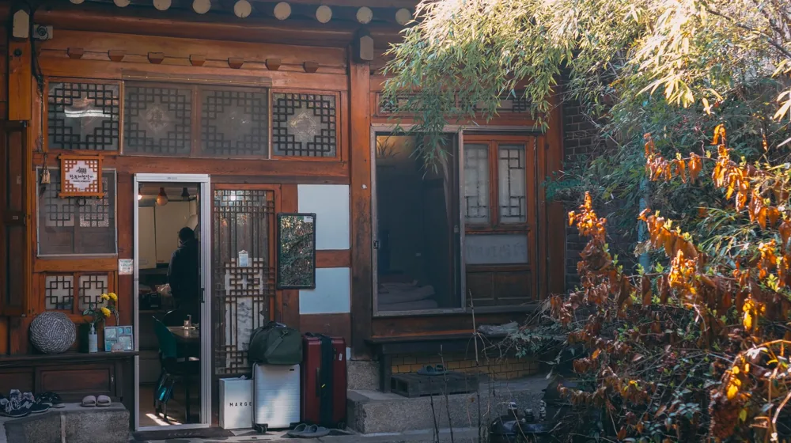

한옥 미식 여행, 후회 없이 즐기려면? 필수 체크리스트와 주의할 점
사진: 정규송 Nui MALAMA / Pexels (무료 이미지, 출처 표기)
고즈넉한 한옥에서 특별한 미식의 경험

고즈넉한 한옥에서 특별한 미식을 경험하는 상상, 한 번쯤 해보셨을 겁니다. 하지만 막상 떠나려니 어디서부터 어떻게 준비해야 할지 막막하고, 혹시 예상치 못한 불편함은 없을지 걱정되시나요? 이 글에서는 한옥 미식 여행을 후회 없이 즐기기 위한 필수 준비물부터 숙소와 식당 선택 노하우, 그리고 여행 중 마주칠 수 있는 주의사항까지, 2026년 11월 기준으로 상세히 알려드립니다.
한옥 미식 여행, 무엇을 기대할까?
한옥 미식 여행은 한국의 전통 건축미가 살아있는 공간에서 지역 특색이 담긴 음식을 맛보는 특별한 경험입니다. 단순히 식사를 넘어, 한옥이 주는 고유의 분위기와 자연 친화적인 환경 속에서 여유로운 시간을 보낼 수 있습니다. 미쉐린 가이드에 소개된 한옥 레스토랑부터, 정갈한 한정식(코스 요리로 제공되는 한국 전통 식사)이나 궁중 요리, 혹은 현대적인 감각으로 재해석한 퓨전 한식까지 다양한 선택지가 있습니다.
고즈넉한 마당에서 차를 마시거나, 온돌(한국 전통의 바닥 난방 시스템) 방에 앉아 창밖 풍경을 바라보며 깊은 휴식을 취할 수 있습니다. 이는 단순한 관광을 넘어 한국의 문화와 정서를 오감으로 체험하는 방식입니다.
성공적인 한옥 미식 여행을 위한 체크리스트
한옥 미식 여행을 떠나기 전, 다음 체크리스트를 확인하여 더욱 만족스러운 경험을 준비해보세요.
- 여행 시기: 봄과 가을은 날씨와 풍경이 가장 아름다워 추천합니다. 여름과 겨울 방문 시에는 숙소의 냉난방 시설(특히 온돌 작동 여부, 에어컨 유무)을 미리 확인하는 것이 좋습니다.
- 예산 계획: 숙소 비용, 미식 식당 이용 비용, 추가 체험(다도, 한복 등) 비용을 고려하여 전체 예산을 계획합니다. 2026년 11월 기준으로 인기 있는 한옥 숙소는 1박에 10만원대에서 30만원대, 미식 식당 코스 요리는 1인당 5만원대에서 15만원대 이상까지 다양합니다.
- 필수 준비물:
- 편안한 신발: 돌담길이나 구불구불한 골목을 걷는 경우가 많으므로 발이 편한 신발이 좋습니다.
- 간단한 상비약: 여행 중 발생할 수 있는 소화 불량이나 가벼운 감기에 대비합니다.
- 개인 세면도구: 환경 보호를 위해 일회용품 대신 개인 물품을 챙기는 것이 좋습니다.
- 보조배터리: 한옥 숙소의 콘센트 개수가 적을 수 있으니 여분 충전기를 준비합니다.
- 사전 예약: 특히 주말이나 성수기에는 인기 있는 한옥 숙소와 미식 식당의 예약이 빠르게 마감됩니다. 최소 한 달 전에는 예약하는 것이 좋습니다.
한옥 숙소와 미식 식당, 똑똑하게 고르는 법
한옥 미식 여행의 만족도를 높이려면 숙소와 식당 선택이 중요합니다. 다음 기준을 참고하여 나에게 맞는 곳을 찾아보세요.
문화재청의 '살아 숨 쉬는 한옥' 프로그램(2026년 11월 기준)이나 각 지자체 관광 안내 홈페이지에서는 검증된 한옥 숙소와 전통 식당 정보를 얻을 수 있습니다. 정확한 정보는 해당 기관의 공식 웹사이트에서 다시 확인하시길 권장합니다.
한옥 미식 여행 중 꼭 알아둘 주의사항
한옥은 현대식 건물과 다른 특징을 가지고 있어, 몇 가지 주의할 점을 미리 알아두면 불편함을 줄일 수 있습니다.
- 온돌 사용 주의: 온돌방은 매우 따뜻하지만, 익숙하지 않은 경우 너무 뜨거울 수 있습니다. 숙소 직원의 안내에 따라 적절한 온도로 조절하거나, 담요 등을 활용하세요.
- 방음 문제: 전통 한옥은 현대식 건물에 비해 방음이 취약할 수 있습니다. 늦은 시간까지 큰 소리를 내거나, 다른 투숙객에게 피해를 줄 수 있는 행동은 삼가는 것이 좋습니다.
- 편의시설 차이: 샤워 수압이 약하거나, 콘센트 위치가 불편할 수 있습니다. 현대적인 편의성에 익숙하다면 미리 이런 점을 감안하고 여유로운 마음으로 즐기는 것이 좋습니다.
- 시설물 훼손 주의: 한옥은 소중한 문화유산이므로, 시설물을 조심스럽게 다루고 훼손하지 않도록 주의해야 합니다.
후회 없는 한옥 미식 여행을 위한 팁
한옥 미식 여행을 더욱 풍성하게 즐기기 위한 추가 팁을 드립니다.
- 테마 설정하기: 전주, 경주, 안동 등 특정 지역의 한옥 마을을 중심으로 여행 계획을 세우거나, 궁중음식, 사찰음식 등 특정 테마의 미식을 중심으로 일정을 구성해보세요.
- 문화 체험 연계: 숙소나 식당 주변에서 다도 체험, 한복 체험, 전통 공예 클래스 등 한국 문화를 직접 경험할 수 있는 프로그램을 함께 즐기면 더욱 깊이 있는 여행이 됩니다.
- 사진 스팟 탐색: 한옥의 고즈넉한 풍경은 멋진 사진을 남기기에 좋습니다. 미리 아름다운 포토존을 찾아보고, 고풍스러운 배경에서 인생샷을 남겨보세요.
- 유연한 마음 가지기: 예상치 못한 작은 불편함이나 계획에 없던 상황도 여행의 일부로 받아들이는 유연한 마음이 필요합니다. 오히려 이런 순간들이 특별한 추억으로 남을 수 있습니다.
🔗 이 글도 함께 보면 좋아요: 면세점 쇼핑, 온라인 vs 오프라인? 최저가 찾아 후회 없이 구매하는 법
관련 추천 상품
한옥 숙박권, 전통 다과 세트 관련 인기 상품 보러가기
이 포스팅은 쿠팡 파트너스 활동의 일환으로, 이에 따른 일정액의 수수료를 제공받습니다.